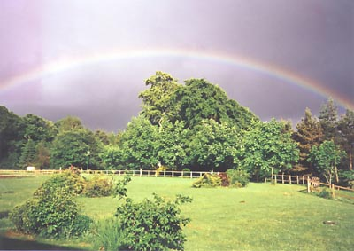

So mein erster Term beinhaltet ja logischerweise auch die erstmalige Ankunft im Camphill. Anreise war locker, Gott sei dank musste ich nichts fürs Ãœbergepäck bezahlen. Gitarre war auch mit auf Reise, zum Glück mit Holz-Koffer sonst wär da bis auf Holzspäne wohl nichts übrig geblieben. Wenn man aus den Flugzeugluken immer sieht wie die Gepäckmenschen wie die Verrückten die Koffer durch die Gegend schleudern, fängt man schon an, sich Sorgen zu machen…
Umstieg war in London Heathrow, mein Güte unendliche Welten, da passt Tegel ja 10-mal rein. Flug nach Aberdeen war am Abend, mehr oder weniger pünktlich angekommen, auf Koffer und auf die Menschlein gewartet, die mich abholen wollten. Zum Glück waren die mit nem Auto da, aber zu früh gefreut, die Autofahrt verlief nicht ruhig sondern artete in eine Rallye-Fahrt aus. Es war stockduster, nur das Fernlicht beleuchtete tunnelartig die einspurige Strasse und rechts und links sah ich nur noch verschwommene Getreidesträucher, die an mir vorbeirasten. Erinnerte mich ein bisschen daran, wenn Raumschiff Enterprise auf Lichtgeschwindkeit beschleunigt. War dann endlich froh, als wir mit langsamerem Tempo an den Ort kamen, wo ich mich die meiste Zeit des Jahres aufhalten sollte. Das sogenannte Murtle Estate war tatsächlich an einem Hügel gelegen (vielleicht ist das das Hill im Camphill?), viel konnte ich nicht erkennen, da es ja schon Nacht war. Nur vereinzelte Lichter aus Häusern und einige Leute, die uns mit einem Gesichtsausdruck ansahen, den ich in Zukunft den Neuankömmmlingen ebenfalls zeigen würde: ‘Ihr wisst ja gar nicht worauf ihr euch eingelassen habt…’
Nun denn, Runde mit dem Auto gemacht und am Hause angekommen, in das ich eingeteilt wurde. Name des Hauses war St.Christophers und der Hausvater hieß lustigerweise Chris, behauptete aber, keinen Pakt mit dem Hausnamen geschlossen zu haben. Hausmutter war eine Portugiesin, die 4 eigene Kinder besaß. So ähnlich waren auch die anderen Häuser mit Hauseltern organisiert. Daneneben gab es in unserem Haus noch sogenannte 2 Senior Co-Worker, die schon länger mit von der Partie in Camphill waren: Engländer Clive und eine weitere Portugiesin namens Fatima. Alles etwas kompliziert, besonders war der Zusammenhang zwischen Portugal und Schottland nicht klar. Eines hatten sie aber alle gemeinsam, die Älternen waren alle so in den Mitte/Ende 30-ern.
Natürlich war ich nicht der einzig Neue, sondern es gesellten sich noch 4 weitere Jugendliche so etwa in meinem Alter ein: Mie (Dänin), Rebecca (Engländerin), Thor (leicht verrückter Däne, der zuerst bei der Armee war und dann als Fischinnereien-Ausnehmer gearbeitet hatte) und Nicole (Deutsche). Donald, ein völlig im positiven Sinne durchgeknallter Nigerianer, der schon zuvor im kalten Finnland camphillisiert war, kam später im Oktober zu uns.
Aufwachen am Tag
So, am nächsten Tag konnte ich mir ein besseres Bild von der Umgebung machen, denn es wurde Licht und ich sah, dass es gut war. War echt ein cooler Ort. Das Murtle Estate war wie ein ganz kleines Dorf. Etwas rundlich waren die ganzen Einfamilien Häuser angelegt und in der Mitte ging es bergab, wo die Schule, der Spielplatz, die Turn -und Schwimmhalle waren. Zudem kein Straßenlärm und sauviel Grün.

Die Kinder, die wir betreuten, hatten noch Ferien und kamen erst 4 Tage nach meiner Ankunft, wodurch der Ort so verfälscht friedlich und unaufgeregt wirkte. Die 4 Tage waren natürlich nicht fürs Rumhängen da, sondern die ganzen neuen Co-Worker mussten Seminare und Vorbereitungskurse wahrnehmen. Co-Worker waren zu meiner Ãœberraschung fast nur Mädchen, die ein soziales Jahr durchzogen, Zivis waren fast keine da, aber beschweren wollte ich mich natürlich nicht… Ganz gut war, dass das Feld so ziemlich international besetzt war (Koreaner, Japaner, Dänen, Schweden, Inder etc.). Mit den jungen Leuten aus unserem Haus haben wir dann auch einen Ausflug nach Aberdeen gemacht, nicht nur wegen der Größe/Sprache eine ganz andere Stadt als Berlin: am Meer gelegen, Granitsteinhäuser und man mag es als Berliner kaum fassen: Freundliche hilfsbereite Leute.
Die Unterkunft
Mein Zimmer war groß genug und hatte einen schönen Ausblick (siehe Bild). Das einzige und grosse Problem war, dass ich der Nachbar von Nick war, was die ganze Sache super stressig machte. Pause in meinem Zimmer war ein Fremdwort. Zum Glück kam ich 2 Monate später in ein kleines Häuschen neben St.Christophers welches Coracle hieß und wo nur Co-Worker, vier an der Zahl, lebten (Donald, ich und wechselnde Besetzung). Hatte ein bisschen WG-flair und man hatte endlich ausserhalb seiner Arbeitszeiten Ruhe vor den Kindern und konnte auch mal lauter sein.
Die Kinder
Nach vier Tagen hatte man sich ganz gut eingelebt, kannte mittlerweile die kuriosen Häusernamen auswendig (Juniper, Mignon, Mignotte, St.Andrews, Robert Owen etc.) und hatte sich im Rund nicht mehr verlaufen und verstand sich mit seinen neuen Mitbewohnern schon ganz gut. Jetzt fehlte nur noch das sauscharfe Chilly in der Waldorfsuppe. Am 7. August kamen nämlich die Kinder, die dem ruhigen Ort “etwas” Leben einhauchten. Natürlich hatte jedes Kind eine Akte, die wir uns zu Herzen nahmen, allerdings brachte das nichts, weil sich solche Kinder eben sehr schwer per Text beschreiben lassen. Überraschend war, dass die Kinder über ihr Äußerliches nicht vermuten ließen, dass sie eine “besondere” Betreuung gebraucht hätten. Sahen alle ganz “normal” aus, bis plötzlich ein Kind aus unerklärlichem Grund losschrie und nicht mehr aufhörte. Wurden dann aufgeklärt, dass es sehr auf Schuhe fixiert war und nicht damit klar kam, dass die Schuhe nicht mehr da waren, wo es sie vor 2 Monaten gesehen hatte. Weitere Details zu den Kindern werde ich hier aus Datenschutzgründen nicht von mir geben, schließlich weiß ich auch nicht, ob die Eltern und die Kinder selbst damit einverstanden wären.